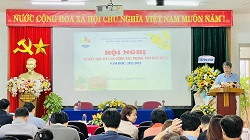
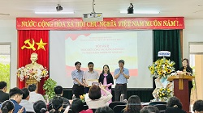
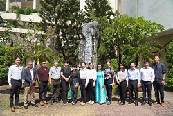

Tin nỗi bật:
| Thư chúc mừng năm mới của Hiệu trưởng Trường THPT chuyên Lê Quý Đôn, Đà Nẵng: | |
|---|---|
| Kính gửi: Quý đồng nghiệp, quý vị phụ huynh, quý thầy giáo, cô giáo, các anh chị nhân viên cùng các em học sinh gần xa thân mến ! | |
| Hội nghị Sơ kết học kì I và công tác trọng tâm học kì II năm học 2022-2023: | |
|  | Để nhìn nhận và đánh giá kết quả thực hiện kế hoạch giáo dục của nhà trường trong chặng đường nửa năm học vừa qua, nhằm phát huy những thế mạnh đã đạt được và khắc phục những điểm còn hạn chế, góp phần thực hiện thắng lợi nhiệm vụ năm học 2022-2023 trường THPT chuyên Lê Quý Đôn đã tổ chức Hội nghị Sơ kết học kì I và công tác trọng tâm học kì II vào lúc 7g30, ngày 12 tháng 01 năm 2023. |
| Hội nghị tổng kết công tác Đảng năm 2022 và triển khai nhiệm vụ năm 2023: | |
|---|---|
|  | Thực hiện kế hoạch số 01-KH/ĐU ngày 29/01/2022 của Đảng ủy nhà trường, nhằm tổng kết công tác Đảng năm 2022 và đề ra phương hướng, nhiệm vụ năm 2023; đồng thời, khen thưởng các chi bộ, Đảng viên đạt thành tích xuất sắc năm 2022, Ban chấp hành Đảng bộ trường THPT chuyên Lê Quý Đôn thống nhất tổ chức tổng kết công tác Đảng năm 2022 và triển khai nhiệm vụ năm 2023 vào lúc 9g45, ngày 12 tháng 01 năm 2023. |
TIN TỨC CHUNG
Bộ GD&ĐT công bố Thông tư sửa đổi, bổ sung một số điều của Quy chế thi tốt nghiệp THPT xin ý kiến góp ý rộng rãi.
ĐỐI NGOẠI - HỢP TÁC
 Ngày 01 và 02/11/2022, Đoàn công tác của Chevron và SEAMEO STEM-ED đã có chuyến thăm và làm việc với Trường THPT chuyên Lê Quý Đôn TP. Đà Nẵng.
BÍ QUYẾT HỌC THI
Mỗi môn thi thành phần trong đề tham khảo bài tổ hợp khoa học xã hội gồm 40 câu hỏi với thời gian làm bài 50 phút. Trong đó, phần lớn câu hỏi lớp 12 thuộc chương trình học kì I. Đề thi không xuất hiện những câu hỏi thuộc phần tinh giản.